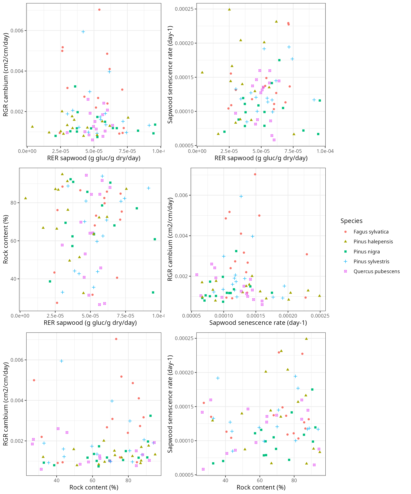

Calibration of growth and senescence parameters
Miquel De Cáceres
2022-11-25
Source:vignettes/parametrization/GrowthCalibration.Rmd
GrowthCalibration.RmdIntroduction
Goals
The growth model included in medfate implements processes regulating plant carbon balance and growth. Species-level parameter values for these processes are obtained from: (a) global functional trait databases; (b) meta-modelling exercises; (c) model calibration exercises. The main goal of the current exercise is to obtain suitable values (via model calibration) for parameters related with the maintenance respiration costs, formation rates and senescence rates of sapwood, because these are difficult to obtain using other means. At the same time, the exercise provides information on the performance of the model to predict secondary growth at the tree and stand levels.
Observational data
We used to data sets for the calibration exercise:
- The first data set corresponds to 75 permanent forest plots of the Spanish National Forest Inventory located in Catalonia. Forest plots correspond to pure stands whose dominant species are Fagus sylvatica, Pinus halepensis, Pinus nigra, Pinus sylvestris or Quercus pubescens. There are 15 plots per each dominant species and each set of 15 plots encompass a range of climatic aridity. Plot characteristics are described in Rosas et al. (2019). Dendrochronological series are available for up to 6 trees per plot and were sampled in December 2015. Note that a sixth species (Quercus ilex) was included in Rosas et al (2019), but dendrochronological dating is not available.
- The second data set corresponds to 12 plots located in the Pyrenees and describing pure Pinus uncinata stands close to the treeline. Dendrochronological series were taken in 2004-2005 from tree base samples and were available for almost all trees in each stand. Forest stands and sampling procedures are described in Batllori & Gutiérrez (2008) and Batllori et al. (2009).
Target parameters for calibration
The model parameters for which we desired good estimates are:
- Sapwood daily respiration rate (RERsapwood) - Used to modulate maintenance respiration demands of living sapwood tissues (parenchyma, cambium, phloem, etc.), which in large trees may also represent a large fraction of maintenance respiration.
- Sapwood maximum growth rate (RGRcambiummax) - Used to modulate tree maximum daily sapwood growth rates (relative to current cambium perimeter). Actual relative growth rates include temperature and sink limitations to growth.
- Sapwood daily senescence rate (SRsapwood) - Used to determine the daily proportion of sapwood that becomes heartwood. It regulates the area of functional sapwood, together with the sapwood maximum growth rate.
In addition, soil stoniness in the target plots had been estimated
from surface stoniness classes. Since soil rock fragment content
(rfc) has a strong influence on soil water capacity, we
decided to include the proportion of rocks in the second soil layer
(between 30 and 100 cm) as a parameter to be calibrated.
Calibration procedure
For each forest plot in the first data set, we matched each available dendrochronological series with a forest inventory tree cohort by finding which tree (in the IFN3 sampling) had the DBH most similar to that estimated from the dendrochronology at year 2000. Then, we took the series of annual basal area increments (BAI) as the observations to be matched by model secondary growth predictions for the matched tree cohort. For each forest plot of the second data set, we took all available dendrochronological series between 1990 and 2004. Available diameter increments (DI) were used to infer DBH at year 1990 and we transformed DI into annual BAI.
Simulations were performed using daily weather data for each target
plot, obtained via interpolation using package
meteoland (2001 - 2015 period or 1990-2004 period,
depending on the data set), and soil physical characteristics where
drawn from SoilGrids data base. Water use efficiency parameters
(WUE and WUE_par) were given values resulting
from the meta-modelling
exercise, whereas other parameters of the sensitivity analysis were
left to the species-level defaults of SpParamsMED. We
calibrated the four target parameters for the target dominant species of
the target plot using a genetic algorithm (function ga from
package GA). Model parameter values were assumed to be
the same for all cohorts of the target species, while the remaining
species in the plot were given default constant parameter values. The
objective function for the genetic algorithm was the average, across
cohorts with observed dendrochronology series, of the mean absolute
error (MAE) resulting from comparing observed and predicted annual BAI
series. Population size for the genetic algorithm was set to 40
individuals. A maximum of 25 iterations of the genetic algorithm were
allowed, and the calibration procedure stopped if the best parameter
combination did not change during 5 consecutive iterations.
| Minimum | Maximum | |
|---|---|---|
| RERsapwood | 1.0e-06 | 1.0e-04 |
| RGRcambiummax | 1.0e-04 | 2.0e-02 |
| SRsapwood | 1.0e-05 | 2.5e-04 |
| rfc@2 | 2.5e+01 | 9.5e+01 |
Calibration results
Error function
The following panel shows the distribution of the final (optimum) values of the error function (average relative MAE) by dominant species:

Parameter distribution and covariance
The following panels show the distribution of calibrated parameter values by species (gray dashed lines indicate the parameter value limits used in the calibration procedure):

The following table shows mean error and parameter values by species and overall means:
| value_cal | RERsapwood_cal | RGRcambiummax_cal | SRsapwood_cal | rfc_cal | |
|---|---|---|---|---|---|
| Fagus sylvatica | 46.05053 | 4.72e-05 | 0.0032049 | 0.0001682 | 54.31211 |
| Pinus halepensis | 49.52230 | 5.10e-05 | 0.0023074 | 0.0001314 | 62.22081 |
| Pinus nigra | 44.77247 | 4.67e-05 | 0.0019126 | 0.0001386 | 76.60217 |
| Pinus sylvestris | 41.51758 | 4.84e-05 | 0.0024408 | 0.0001235 | 65.72823 |
| Quercus pubescens | 38.67673 | 4.15e-05 | 0.0015622 | 0.0001473 | 54.71083 |
| All | 44.10792 | 4.70e-05 | 0.0022856 | 0.0001418 | 62.71483 |
Statistically significant differences can be observed between species
for RERsapwood and RGRcambiummax, as shown in
the following ANOVA tables:
## Analysis of Variance Table
##
## Response: RERsapwood_cal
## Df Sum Sq Mean Sq F value Pr(>F)
## Species 4 7.2340e-10 1.8085e-10 0.4152 0.7971
## Residuals 70 3.0491e-08 4.3559e-10## Analysis of Variance Table
##
## Response: RGRcambiummax_cal
## Df Sum Sq Mean Sq F value Pr(>F)
## Species 4 2.2982e-05 5.7454e-06 3.3726 0.01394 *
## Residuals 70 1.1925e-04 1.7035e-06
## ---
## Signif. codes: 0 '***' 0.001 '**' 0.01 '*' 0.05 '.' 0.1 ' ' 1## Analysis of Variance Table
##
## Response: SRsapwood_cal
## Df Sum Sq Mean Sq F value Pr(>F)
## Species 4 1.7708e-08 4.4269e-09 1.3807 0.2495
## Residuals 70 2.2444e-07 3.2063e-09## Analysis of Variance Table
##
## Response: rfc_cal
## Df Sum Sq Mean Sq F value Pr(>F)
## Species 4 5052.8 1263.20 2.9854 0.02461 *
## Residuals 70 29619.2 423.13
## ---
## Signif. codes: 0 '***' 0.001 '**' 0.01 '*' 0.05 '.' 0.1 ' ' 1Finally, the following panels illustrate the overall lack of covariance between calibrated parameter values: 
Final evaluation
Finally, we wanted to evaluate the reduction in predictive error of secondary growth attained by calibrating growth parameters. Moreover, since applications of the growth model will normally be on plots lacking growth observations, we wanted to assess the predictive error of species-level parameter averages and overall parameter averages. Hence, we ran the growth model on the forest plots using either species-level averages or the overall averages of the calibrated parameters. In this second case, we excluded from the values to be averaged those corresponding to plots where relative MAE was > 100%, assuming that calibration was not successful in those cases. The following table shows the species-level parameter values:
| RERsapwood | RGRcambiummax | SRsapwood | |
|---|---|---|---|
| Fagus sylvatica | 4.35e-05 | 0.0034501 | 0.0001407 |
| Pinus halepensis | 4.11e-05 | 0.0017278 | 0.0001214 |
| Pinus nigra | 4.88e-05 | 0.0013949 | 0.0000999 |
| Pinus sylvestris | 5.39e-05 | 0.0027899 | 0.0001338 |
| Pinus uncinata | 4.40e-05 | 0.0065598 | 0.0001443 |
| Quercus humilis | 4.19e-05 | 0.0010704 | 0.0001215 |
The following panels show the prediction error (either absolute or
relative) for the annual BAI, as done above but including the new
simulations:

| Species | MAE plot (cm2/yr) | MAE spp (cm2/yr) | MAE all (cm2/yr) | MAE plot (%) | MAE spp (%) | MAE all (%) |
|---|---|---|---|---|---|---|
| Fagus sylvatica | 5.065787 | 7.187655 | 6.762901 | 48.87756 | 61.12850 | 57.87831 |
| Pinus halepensis | 5.346160 | 5.574996 | 5.624983 | 50.23011 | 52.99016 | 50.70924 |
| Pinus nigra | 3.306402 | 2.941632 | 4.749394 | 45.92546 | 45.18358 | 86.87255 |
| Pinus sylvestris | 4.568588 | 4.662120 | 4.867897 | 47.66798 | 54.52595 | 53.72060 |
| Quercus humilis | 2.726819 | 2.809425 | 5.289270 | 39.31847 | 47.47226 | 83.88704 |
| NA | NA | NA | NA | NA | NA | NA |
We also evaluated the performance of the model in terms of predicting total basal area growth during the 15 years simulated, where we again used as error function the mean absolute error:

| Species | MAE plot (cm2) | MAE spp (cm2) | MAE all (cm2) | MAE plot (%) | MAE spp (%) | MAE all (%) |
|---|---|---|---|---|---|---|
| Fagus sylvatica | 41.90984 | 67.71933 | 72.45596 | 34.36328 | 47.21491 | 37.46963 |
| Pinus halepensis | 63.63887 | 64.37949 | 63.48059 | 30.93438 | 42.57587 | 31.36333 |
| Pinus nigra | 35.48213 | 27.39498 | 62.77894 | 27.35546 | 30.80023 | 82.57373 |
| Pinus sylvestris | 60.28952 | 60.35692 | 64.14304 | 36.97260 | 47.13355 | 45.77152 |
| Quercus humilis | 37.19224 | 31.37921 | 74.31775 | 24.22275 | 38.58742 | 72.23387 |
| NA | NA | NA | NA | NA | NA | NA |
From these results, it is apparent that the calibration improved substantially the predictive capacity of the model. More importantly, using species-level averages or overall averages do not seem to increase substantially prediction errors, compared to plot-level calibrated parameter values.
Bibliography
- Batllori, E., J. M. Blanco-Moreno, J. M. Ninot, E. Gutiérrez, and E. Carrillo. 2009. Vegetation patterns at the alpine treeline ecotone: the influence of tree cover on abrupt change in species composition of alpine communities. Journal of Vegetation Science 20:814–825.
- Batllori, E., and E. Gutiérrez. 2008. Regional tree line dynamics in response to global change in the Pyrenees. Journal of Ecology 96:1275–1288.
- Rosas, T., M. Mencuccini, J. Barba, H. Cochard, S. Saura-Mas, and J. Martínez-Vilalta. 2019. Adjustments and coordination of hydraulic, leaf and stem traits along a water availability gradient. New Phytologist 223:632–646.